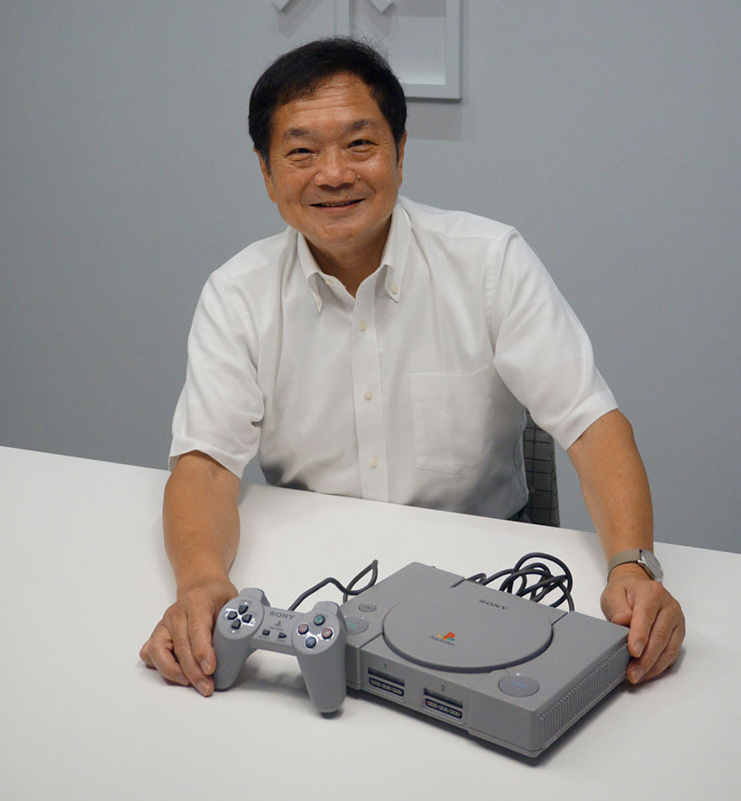
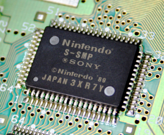
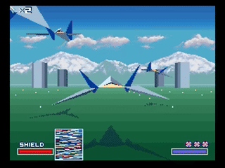
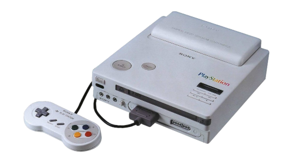
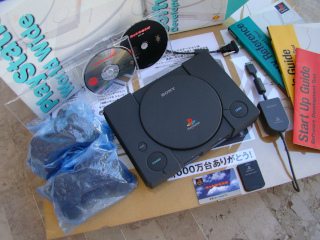
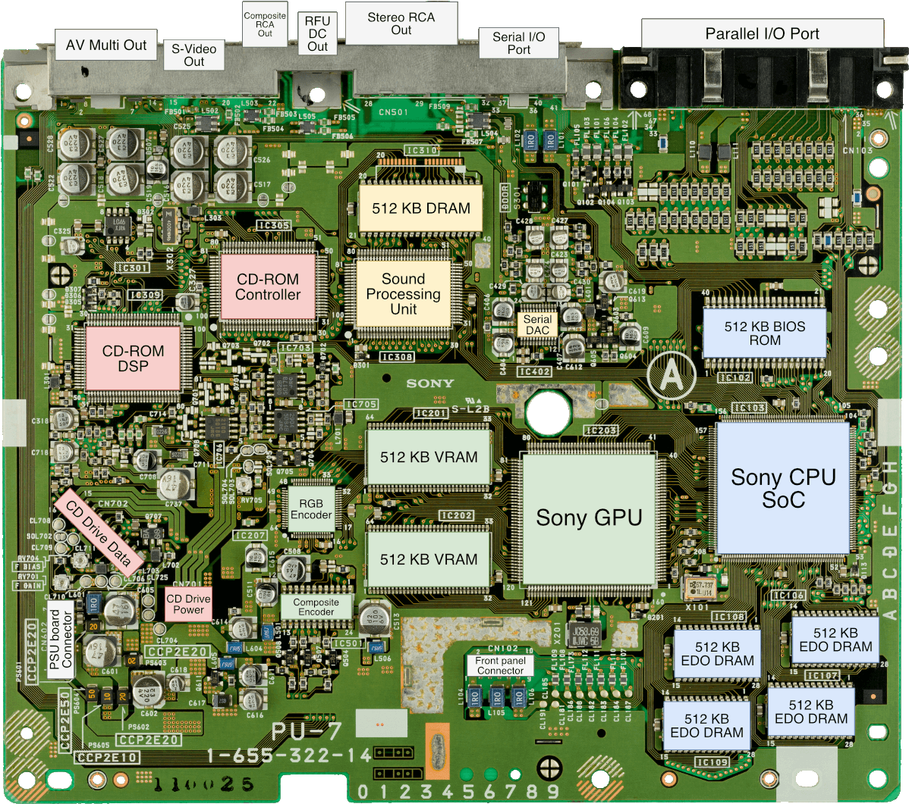
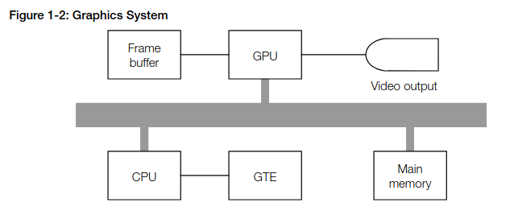
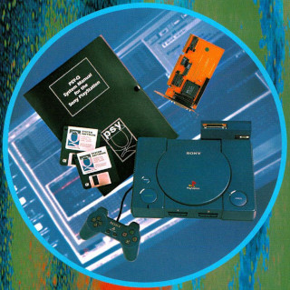

Retro Game Dev

Desenvolvendo para o PlayStation em 2024
Lucas S. Vieira
19 de outubro de 2024
UaiDev Talks 2024
Quem sou eu?
Desenvolvedor na Workalove EdTech
Interesses: Ciência cognitiva, teoria da computação, desenvolvimento de linguagens, desenvolvimento de jogos, programação bare-metal
Co-fundador da Common Lisp Brasil
lisp.com.br
luksamuk https://luksamuk.codes/ luksamuk
Visão Geral
- História do PlayStation
- Ferramentas e kits de desenvolvimento
- Visão geral do hardware
- Pipeline de gráficos
- Exemplo de código
- Homebrews e links úteis
Esta apresentação tem links interativos! QR Code ao final.
História do PlayStation
Figura: Ken Kutaragi e o Sony PlayStation
Antes do Super Nintendo…
- Sony: Ken Kutaragi
- S-SMP: Sound Chip do SNES
Antes do PlayStation…
Quarta geração de consoles (1987)
- Sega Genesis / Sega Mega Drive (1989)
- Super Nintendo / Super Famicom (1991)
3D já era uma realidade em filmes e simulações, e até em alguns jogos (principalmente em arcades).
Exemplo: StarFox (SNES, 1993)
Parceria Sony x Nintendo
- Nintendo Super Disc / Nintendo Play Station
- Cartuchos de SNES + CD-ROMs
- Apenas a Sony poderia produzir os CD-ROMs!
- Nintendo "trai" a Sony e fecha parceria com a Phillips
Quinta geração de consoles (1993)
Consoles de 32-bits que introduziam o CD-ROM como mídia física*.
Objetivo: Colocar milhares de polígonos na tela – 3D!
- Sega Saturn (1994)
- Sony PlayStation (1994)
- Nintendo 64 (1996)
*Exceto o Nintendo 64.


Sonic R (Sega Saturn), Crash Bandicoot (Sony PlayStation) e The Legend of Zelda: Ocarina of Time (Nintendo 64).
Ferramentas e kits de desenvolvimento
Toolchain legacy
Plataforma: Windows XP / Windows 98
- Linguagem C
- Psy-Q + ccpsx (DJGPP modificado)
- Editor de sua escolha
- Várias ferramentas de apoio (TIMTOOL, MC32, etc)
Figura: Kit de desenvolvimento oficial do PS1.
Net Yaroze (ネットやろうぜ, Netto Yarōze)
Promoção da Sony para atrair hobbyistas / indie devs. Incluía um PlayStation para desenvolvimento, cabo serial, Psy-Q SDK, guias de desenvolvimento e de hardware…
Figura: Sony Net Yaroze com o SDK.
Toolchain nova
Plataforma: Windows 11 / Linux
- Linguagem C
- Psy-Q + Nugget + GCC-MIPSEL
- Extensão PSX.Dev (VSCode)
Figura: Dashboard da extensão PSX.Dev para VSCode.
Toolchains alternativas
- PSn00bSDK (C + ASM)
- PsyQo + EASTL (C++)
- Assembly puro (
armips)
Hardware
Figura: Placa-mãe de um PlayStation modelo SCPH-1000.
CPU
- LSI Logic MIPS R3000A 32-bit (RISC) @ 33.86 MHz
- Co-processadores:
- Cop0: System Control (cache, interrupções…)
- Cop2: Geometry Transformation Engine (GTE)
- MDEC: Motion Decoder (DSP para decodificar vídeo)
AO LADO: Dieshot do CXD8530Q (primeira revisão), tirado da apresentação do Ken Kutaragi na Hot Chips '99.
Fonte: PlayStation Dev Wiki
A especificação das CPUs MIPS 32-bit possuía um co-processador Cop1 para float, e um D-Cache para acesso à RAM.
O PlayStation 1 não possui nenhum dos dois.
Solução: fixed-points e scratchpad.
Memória RAM
- 2 MB de memória EDO (Extended Data Out)
- Acesso LIVRE (você não terá segmentation faults)
- Mas pode ter exceções de hardware
GPU
- GPU: SCPH-9000 (Toshiba)
- Responsável pela rasterização
- Apenas rasterização 2D!
- VRAM: 1 MB

Jogo: Spider-Man (PSX). Tente notar os artefatos (polygon jittering, z-fighting, t-junctions…)
Outras estruturas
- SPU (Sound Processing Unit) (Sony)
- 16-bit, estéreo ou mono
- Formato ADPCM, 24 canais
- Envelope ADSR
- SRAM: 512 KB DRAM
- CD-ROM
- DSP controlador de motor e laser
- Sistema de arquivos ISO 9660 (Yellow Book)
- Suporta CD-DA (Red Book), CD-ROM XA
Gráficos
Fonte: PlayStation Hardware Reference
Entendendo o Frame Buffer
- Color depth: 24bpp, 15bpp ou usando CLUTs (4bpp ou 8bpp).
- Dividido em texture pages (TPAGEs).
- Comporta o double buffer da tela.
- Comporta texturas (tam. máx.: 256x256, precisão de 1 byte)
- Polígonos suportam gouraud shading…
O que é Gouraud shading?
- Henri Gouraud, 1971
- Interpolação contínua de cores, pode simular luz
Esfera low-poly com reflexão especular.
Banjo, personagem de Banjo-Kazooie, como visto no Nintendo 64.
Exemplo de código
Figura: Detalhe do Psy-Q SDK.
Cubo Gouraud-shaded (Psy-Q / C)
Passo 1: Definir os vértices e a ordem deles para cada triângulo:
// NOTA: 64 = 0.015625
// (note que 4096 = 1.0)
SVECTOR vertices[] = {
{ -64, -64, -64 },
{ 64, -64, -64 },
{ 64, -64, 64 },
{ -64, -64, 64 },
{ -64, 64, -64 },
{ 64, 64, -64 },
{ 64, 64, 64 },
{ -64, 64, 64 }
};
short faces[] = {
0, 3, 2, // top
0, 2, 1,
4, 0, 1, // front
4, 1, 5,
7, 4, 5, // bottom
7, 5, 6,
5, 1, 2, // right
5, 2, 6,
2, 3, 7, // back
2, 7, 6,
0, 4, 7, // left
0, 7, 3
};
Passo 2: Popular a matriz do mundo com rotação, translação e escala
static SVECTOR rotation = {0, 0, 0}; // manipulado via código
static VECTOR translation = {0, 0, 700}; // 0.4375
static VECTOR scale = {ONE, ONE, ONE};
static MATRIX world = {0};
// Populate world matrix with rotation, translation,
// scale values
RotMatrix(&rotation, &world);
TransMatrix(&world, &translation);
ScaleMatrix(&world, &scale);
// Sets world matrix to be used by the GTE for rotation
// and translation
SetRotMatrix(&world);
SetTransMatrix(&world);
Passo 3: Para cada triângulo, transformar seus vértices e transformá-los em pontos 2D:
for(i = 0; i < NUM_FACES * 3; i += 3) {
POLY_G3 *poly = (POLY_G3*)nextprim;
setPolyG3(poly);
setRGB0(poly, 255, 0, 255);
setRGB1(poly, 255, 255, 0);
setRGB2(poly, 0, 255, 255);
nclip = RotAverageNclip3(
&vertices[faces[i + 0]],
&vertices[faces[i + 1]],
&vertices[faces[i + 2]],
(long*)&poly->x0,
(long*)&poly->x1,
(long*)&poly->x2,
&p, &otz, &flg);
// ...
}
Passo 4: Verificar se a primitiva deveria estar sendo desenhada na tela (normal clipping) e colocá-la na ordering table (lista de primitivas):
for(i = 0; i < NUM_FACES * 3; i += 3) {
// ...
if(nclip <= 0) continue;
if((otz > 0) && (otz < OT_LENGTH)) {
addPrim(ot[currbuff][otz], poly);
nextprim += sizeof(POLY_G3);
}
}
Passo 5: Esperar vsync; desenhar quadro anterior; realizar sorting dos polígonos.
DrawSync(0);
VSync(0);
PutDispEnv(
&screen.disp[currbuff]);
PutDrawEnv(
&screen.draw[currbuff]);
DrawOTag(
ot[currbuff] +
OT_LENGTH - 1);
Homebrews
Pequenos projetos que desenvolvi usando este aprendizado.
Wipefaux

Clone parcial do jogo WipEout. Desenvolvido durante o curso PS1 Programming with MIPS Assembly & C.
ATENÇÃO: Os controles são ruins. Você foi avisado(a). :P
Sonic XA (engine-psx)


Fan-game de Sonic The Hedgehog utilizando técnicas do hardware do PSX (áudio CD-XA, FMVs via MDEC, etc.)
ATENÇÃO: Este emulador não toca o áudio. Não é culpa minha…
Comunidades, Cursos e Links
- Cursos e Tutoriais
- Pikuma.com: PS1 Programming with MIPS Assembly & C
- Lameguy's PlayStation Programming Series
- Website do Schnappy
- Website do Alex Free: The Ultimate Guide to PSX CD-R's
- Comunidades
- Documentação
- PSX Spex (nova versão em HTML)
- PlayStation Dev Wiki (engenharia reversa)
- PlayStation Hardware Reference (oficial)
- Outros
Obrigado!
Acesse esta apresentação:
https://luksamuk.codes/talks/psx-programming.html
lucasvieira@protonmail.com luksamuk https://luksamuk.codes/ luksamuk